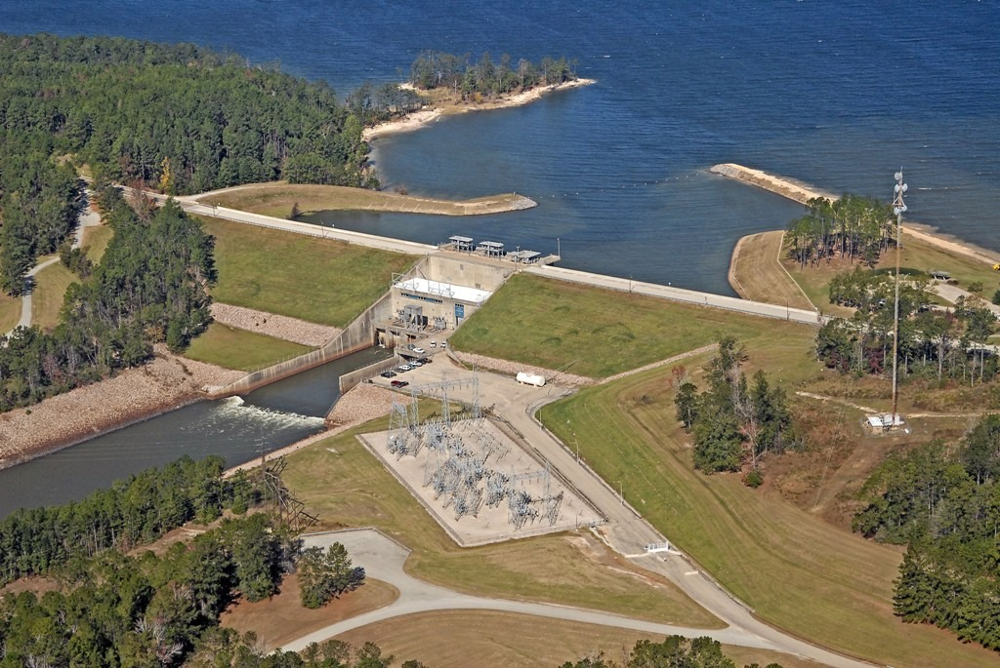
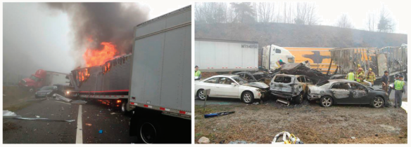
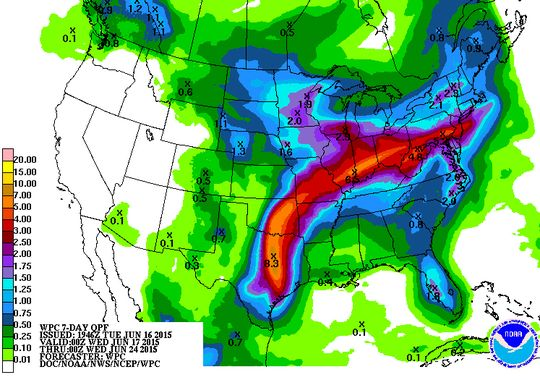

Alex Haberlie
Department of Geography
Northern Illinois University
DeKalb, IL 60115
ahaberlie@niu.edu
About Me
I am a mixture of a Geographer, Climatologist, Meteorologist, and Computer Scientist. My main interests are in applied Meteorology and Climatology, leaning more towards the Climatology side of things. I am also interested in machine learning and image analysis applications in these fields. I am always happy to discuss these topics and/or my research with others. Feel free to send an email if you have any questions or comments.
Education
| Alex Haberlie | |||
|---|---|---|---|
| University | Major | Degree | Year |
| Northern Illinois Univ. | Geography | Ph.D. | 2018* |
| Northern Illinois Univ. | Geography | M.S. | 2014 |
| Univ. of Wisconsin – Platteville | Computer Science | B.S. | 2010 |
*Expected graduation year
Academic/Meteorology Positions
| Title | Employer | Subject | Period |
|---|---|---|---|
| Unidata Summer Internship | University Corporation for Atmospheric Research | Software Development | May '16 - July '16 |
| Research Assistant | Northern Illinois Univ. | Meteorology | Aug '15 - May '16 |
| Instructor | Northern Illinois Univ. | Meteorology | Aug '14 - May '15 |
| Teaching Assistant | Northern Illinois Univ. | Meteorology | Aug '13 - May '14 |
| Teaching Assistant | Northern Illinois Univ. | Physical Geography | Aug '12 - Aug '13 |
Research and Skills
Meteorology, Climatology, and Geographic Information Science
Managing, Analyzing, and Visualizing Large Repositories of Geospatial Data
Image Analysis, Computer Vision, and Machine Learning Applications
Managing Web Applications, Source Control, Network Communications (UDP/TCP), Software Engineering Concepts and Practices, Database Management, Computer Graphics
Professional and Honorary Society Memberships
American Meteorological Association, Student Member (August 2012 – Present)
Gamma Theta Upsilon, International Geographic Honor Society (May 2014 – Present)
Selected Publications
Haberlie, A. M., W. S. Ashley, A. Fultz, and S. Eagan, 2015: The effect of artificial reservoirs on the climatology warm-season thunderstorms. International Journal of Climatology. Accepted.

Haberlie, A. M., W. S. Ashley, and T. Pingel, 2015: The effect of urbanization on the climatology of thunderstorm initiation. Quarterly Journal of the Royal Meteorological Society, 141: 663–675. Link

Ashley, W. S., S. Strader, D. Dziubla, and A. M. Haberlie, 2015: Driving blind: Weather-related vision hazards and fatal motor vehicle crashes. Bulletin of the American Meteorological Society, 96, 755–778. Link

Haberlie, A. M., K. Gale, D. Changnon, and M. Tannura, 2014: Climatology of tropical system rainfall on the eastern Corn Belt. Journal of Applied Meteorology and Climatology, 53, 395-405. Link

Submitted Papers
Grants
U.S. Department of the Interior, United States Geological Survey Prime Award #G11AP20077, Illinois Water Resource Center, University of Illinois Subaward #2011-03502-03. PI: D. Changnon, Co-PI: A. M. Haberlie. May 2014 – October 2014. $8,663
Invited Presentations
Haberlie, A. M., D. Changnon, 2013: “Climatology of tropical system rainfall on the eastern Corn Belt” (November 2013). Chicago AMS Chapter, DeKalb, IL.
Presentations:
Haberlie, A. M., W. S. Ashley, 2014: A U.S. climatology of mesoscale convective systems: 1997-2013. Proc. 27th Conference on Severe Local Storms, Madison, WI, Amer. Meteor. Soc., 143 Link
Changnon, D., A. M. Haberlie, S. Strader, 2014: Climatology of tropical system rainfall on the eastern Corn Belt. Proc. 94th Annual Amer. Meteor. Soc. Meeting, Atlanta, GA, Amer. Meteor. Soc., 4B.2Link
Haberlie, A. M., W. S. Ashley, and T. J. Pingel, 2014: Method of detecting convective initiation due to differences in land cover. Proc. 94th Annual Amer. Meteor. Soc. Meeting, Atlanta, GA, Amer. Meteor. Soc., 287.Link
Haberlie, A. M., 2010: Developing web applications using the Java Persistence API. University of Wisconsin – Platteville Computer Science and Software Engineering Technical Report, Volume 9.
Awards:
Outstanding Graduate Student – Northern Illinois University – Graduate School (March 2014)
Housing Department Research – University of Wisconsin – Platteville - Housing Department (August 2009)
Updated 5/13/2016